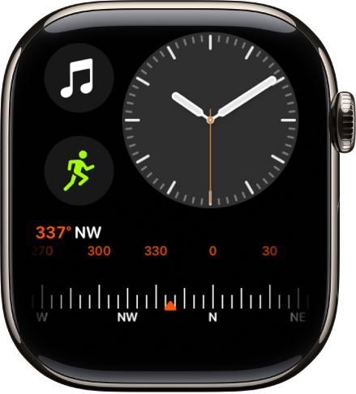

在此表盘中，你可以选取多达三个复杂功能及一个数字或指针刻度盘。
下方的文件数包括本地化资源。固件名称键能确认包的归属；组件的圆屏点击边界、亮屏过渡与 AOD 对照均待设备验证。
NTKWhistlerSubdialsFaceBundle.bundleFACE_STYLE_34_DESCRIPTION色组与设备条件 WhistlerSubdials-Gossamer.color.plist WhistlerSubdials.color.plist 共享色组与默认值
-[NTKWhistlerSubdialsFaceView _tritium_filterProviderForSlot:];-[NTKWhistlerSubdialsFaceView tritium_didTransitionToTritiumOff];-[NTKWhistlerSubdialsFaceView tritium_usesWidgetTransitionPresetColors];-[NTKWhistlerSubdialsFaceView tritium_centerFilterProvider];-[NTKWhistlerSubdialsFaceView tritium_createFaceAnimator];-[NTKWhistlerSubdialsFaceView tritium_animationToCurrentDateFromDate:];-[NTKWhistlerSubdialsFaceView tritium_alwaysOnTimelines];-[NTKWhistlerSubdialsFaceView tritium_bottomFilterProvider];-[NTKWhistlerSubdialsFaceView _tritium_updateComplicationColors];-[NTKWhistlerSubdialsFaceView tritium_willTransitionToTritiumOnToFrameSpecifier:];-[NTKWhistlerSubdialsFaceView tritium_topFilterProvider];-[NTKWhistlerSubdialsFaceView tritium_didTransitionToTritiumOff];-[NTKWhistlerSubdialsFaceView tritium_usesWidgetTransitionPresetColors];-[NTKWhistlerSubdialsFaceView _applyTransitionFraction:fromOption:toOption:forCustomEditMode:slot:];-[NTKWhistlerSubdialsFaceView tritium_createFaceAnimator];-[NTKWhistlerSubdialsFaceView tritium_animationToCurrentDateFromDate:];-[NTKWhistlerSubdialsFaceView tritium_alwaysOnTimelines];-[NTKWhistlerSubdialsFaceView _configureForTransitionFraction:fromEditMode:toEditMode:];-[NTKWhistlerSubdialsFaceView tritium_willTransitionToTritiumOnToFrameSpecifier:];-[NTKWhistlerSubdialsFaceView _applyTransitionFraction:fromNumeralOption:toNumeralOption:];-[NTKWhistlerSubdialsFaceView _applyTransitionFraction:fromPalette:toPalette:];-[NTKWhistlerSubdialsTimeView _minuteTickInset];-[NTKWhistlerSubdialsTimeView _hourTickCount];-[NTKWhistlerSubdialsTimeView _minuteTickCount];-[NTKWhistlerSubdialsTimeView _hourMinuteHandFillColorForColorPalette:];-[NTKWhistlerSubdialsTimeView _minuteTickSize];-[NTKWhistlerSubdialsTimeView _hourMinuteHandStrokeColorForColorPalette:];-[NTKWhistlerSubdialsTimeView _secondHandColorForColorPalette:];-[NTKWhistlerSubdialsTimeView _hourTickSize];+[NTKWhistlerSubdialsFace _complicationSlotDescriptors];+[NTKWhistlerSubdialsFace _richComplicationSlotsForDevice:];+[NTKWhistlerSubdialsFace _orderedComplicationSlots];+[NTKWhistlerSubdialsFace _defaultSelectedComplicationSlotForDevice:];-[NTKWhistlerSubdialsFace selectOption:forCustomEditMode:slot:];-[NTKWhistlerSubdialsFace applyPreviewConfigurationWithFamily:faceColor:];-[NTKWhistlerSubdialsFace complicationsColorRenderingUsage];-[NTKWhistlerSubdialsFace _numberOfOptionsForCustomEditMode:slot:];-[NTKWhistlerSubdialsFace _defaultOptionForCustomEditMode:slot:];-[NTKWhistlerSubdialsFace _indexOfOption:forCustomEditMode:slot:];-[NTKWhistlerSubdialsFace _optionAtIndex:forCustomEditMode:slot:];-[NTKWhistlerSubdialsFaceBundle whistlerSubdialsSpring2020ComplicationTypesBySlot];-[NTKWhistlerSubdialsFaceView _tritium_filterProviderForSlot:];-[NTKWhistlerSubdialsFaceView _complicationAlphaForEditMode:];-[NTKWhistlerSubdialsFaceView _keylineCornerRadiusForComplicationSlot:];-[NTKWhistlerSubdialsFaceView updateWithColorPalette:];-[NTKWhistlerSubdialsFaceView createFaceColorPalette];-[NTKWhistlerSubdialsFaceView setEditingComplicationsPalette:];-[NTKWhistlerSubdialsFaceView tritium_usesWidgetTransitionPresetColors];-[NTKWhistlerSubdialsFaceView _applyTransitionFraction:fromOption:toOption:forCustomEditMode:slot:];-[NTKWhistlerSubdialsFaceView layoutSubviews];-[NTKWhistlerSubdialsFaceView _applyBreathingFraction:forCustomEditMode:slot:];-[NTKWhistlerSubdialsFaceView _filterProviderForSlot:];-[NTKWhistlerSubdialsFaceView _applyOption:forCustomEditMode:slot:];-[NTKWhistlerSubdialsFaceView _prepareForEditing];-[NTKWhistlerSubdialsFaceView _cleanupAfterEditing];-[NTKWhistlerSubdialsFaceView _keylineViewForCustomEditMode:slot:];-[NTKWhistlerSubdialsFaceView _keylineStyleForComplicationSlot:];-[NTKWhistlerSubdialsFaceView _configureComplicationView:forSlot:];-[NTKWhistlerSubdialsFaceView _loadLayoutRules];-[NTKWhistlerSubdialsFaceView _applyColorsFromPalette:];-[NTKWhistlerSubdialsFaceView _keylineLabelAlignmentForCustomEditMode:slot:];-[NTKWhistlerSubdialsFaceView _minimumBreathingScaleForComplicationSlot:];-[NTKWhistlerSubdialsFaceView _newLegacyViewForComplication:family:slot:];-[NTKWhistlerSubdialsFaceView _relativeKeylineFrameForCustomEditMode:slot:];-[NTKWhistlerSubdialsFaceView layoutConfigurationForSlot:];-[NTKWhistlerSubdialsFaceView _tritium_updateComplicationColors];-[NTKWhistlerSubdialsFaceView _applyRubberBandingFraction:forCustomEditMode:slot:];-[NTKWhistlerSubdialsFaceView editingComplicationsPalette];-[NTKWhistlerSubdialsFaceView _applyTransitionFraction:fromPalette:toPalette:];-[NTKWhistlerSubdialsFaceView updateMonochromeColorForRichComplicationView:];-[NTKWhistlerSubdialsTimeView _hourMinuteHandFillColorForColorPalette:];-[NTKWhistlerSubdialsTimeView setPalette:];-[NTKWhistlerSubdialsTimeView _digitalTimeLabelColorForColorPalette:];-[NTKWhistlerSubdialsTimeView _hourMinuteHandStrokeColorForColorPalette:];-[NTKWhistlerSubdialsTimeView _secondHandColorForColorPalette:];-[NTKWhistlerSubdialsTimeView palette];